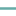
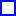
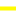

<!doctype html>
<html lang="en">
    <head>
        <meta charset="utf-8">
        <meta http-equiv="X-UA-Compatible" content="IE=edge">
        <meta name="viewport" content="initial-scale=1,user-scalable=no,maximum-scale=1,width=device-width">
        <meta name="mobile-web-app-capable" content="yes">
        <meta name="apple-mobile-web-app-capable" content="yes">
        <link rel="stylesheet" href="css/leaflet.css">
        <link rel="stylesheet" href="css/qgis2web.css">
        <link rel="stylesheet" href="css/leaflet-measure.css">
        <style>
        html, body, #map {
            width: 100%;
            height: 100%;
            padding: 0;
            margin: 0;
        }
        </style>
        <title>West Wits Mineral Rights and Property</title>
    </head>
    <body>
        <div id="map">
        </div>
        <script src="js/qgis2web_expressions.js"></script>
        <script src="js/leaflet.js"></script>
        <script src="js/leaflet.rotatedMarker.js"></script>
        <script src="js/leaflet.pattern.js"></script>
        <script src="js/leaflet-hash.js"></script>
        <script src="js/Autolinker.min.js"></script>
        <script src="js/rbush.min.js"></script>
        <script src="js/labelgun.min.js"></script>
        <script src="js/labels.js"></script>
        <script src="js/leaflet-measure.js"></script>
        <script src="data/RandQuestSyndicateArea_0.js"></script>
        <script src="data/TransmissionPipeline_1.js"></script>
        <script src="data/DistributionPipeline_2.js"></script>
        <script src="data/SouthReefOpencast_3.js"></script>
        <script src="data/RugbyClubMRL_4.js"></script>
        <script src="data/RugbyClubMainReef_5.js"></script>
        <script src="data/MonaLiza_6.js"></script>
        <script src="data/MiningPermitArea_7.js"></script>
        <script src="data/MainReefOpencast_8.js"></script>
        <script src="data/KimberleyReefWest_9.js"></script>
        <script src="data/KimberleyReefEast_10.js"></script>
        <script src="data/SouthReefOutcrop_11.js"></script>
        <script src="data/MRL_12.js"></script>
        <script src="data/MainReefOutcrop_13.js"></script>
        <script src="data/KimberleyOutcrop_14.js"></script>
        <script src="data/BirdReefOutcrop_15.js"></script>
        <script src="data/WestWitsBoundary_16.js"></script>
        <script src="data/WestWitsBoundaryPoints_17.js"></script>
        <script src="data/C18001Farms_18.js"></script>
        <script>
        var map = L.map('map', {
            zoomControl:true, maxZoom:28, minZoom:1
        })
        var hash = new L.Hash(map);
        map.attributionControl.addAttribution('<a href="https://github.com/tomchadwin/qgis2web" target="_blank">qgis2web</a>,<a href="https://www.kirchhoffsurveyors.co.za" target="_blank">Kirchhoff Professional Surveyors</a>');
        var measureControl = new L.Control.Measure({
            primaryLengthUnit: 'meters',
            secondaryLengthUnit: 'kilometers',
            primaryAreaUnit: 'sqmeters',
            secondaryAreaUnit: 'hectares'
        });
        measureControl.addTo(map);
        var bounds_group = new L.featureGroup([]);
        var basemap0 = L.tileLayer('https://server.arcgisonline.com/ArcGIS/rest/services/World_Imagery/MapServer/tile/{z}/{y}/{x}', {
    attribution: 'Tiles &copy; Esri &mdash; Source: Esri, i-cubed, USDA, USGS, AEX, GeoEye, Getmapping, Aerogrid, IGN, IGP, UPR-EGP, and the GIS User Community'
});
        basemap0.addTo(map);
        function setBounds() {
            if (bounds_group.getLayers().length) {
                map.fitBounds(bounds_group.getBounds());
            }
        }
        function pop_RandQuestSyndicateArea_0(feature, layer) {
        }

        function style_RandQuestSyndicateArea_0_0() {
            return {
                pane: 'pane_RandQuestSyndicateArea_0',
                opacity: 1,
                color: 'rgba(9,255,1,1.0)',
                dashArray: '',
                lineCap: 'butt',
                lineJoin: 'miter',
                weight: 3.0, 
                fillOpacity: 1,
                fillColor: 'rgba(29,120,134,0.0)',
            }
        }
        map.createPane('pane_RandQuestSyndicateArea_0');
        map.getPane('pane_RandQuestSyndicateArea_0').style.zIndex = 400;
        map.getPane('pane_RandQuestSyndicateArea_0').style['mix-blend-mode'] = 'normal';
    var layer_RandQuestSyndicateArea_0 = new L.geoJson(json_RandQuestSyndicateArea_0, {
        attribution: '<a href=""></a>',
        pane: 'pane_RandQuestSyndicateArea_0',
        onEachFeature: pop_RandQuestSyndicateArea_0,
        style: style_RandQuestSyndicateArea_0_0,
    });
        bounds_group.addLayer(layer_RandQuestSyndicateArea_0);
        map.addLayer(layer_RandQuestSyndicateArea_0);
        function pop_TransmissionPipeline_1(feature, layer) {
        }

        function style_TransmissionPipeline_1_0() {
            return {
                pane: 'pane_TransmissionPipeline_1',
                opacity: 1,
                color: 'rgba(255,251,1,1.0)',
                dashArray: '10,5',
                lineCap: 'square',
                lineJoin: 'bevel',
                weight: 4.0,
                fillOpacity: 0,
            }
        }
        map.createPane('pane_TransmissionPipeline_1');
        map.getPane('pane_TransmissionPipeline_1').style.zIndex = 401;
        map.getPane('pane_TransmissionPipeline_1').style['mix-blend-mode'] = 'normal';
    var layer_TransmissionPipeline_1 = new L.geoJson(json_TransmissionPipeline_1, {
        attribution: '<a href=""></a>',
        pane: 'pane_TransmissionPipeline_1',
        onEachFeature: pop_TransmissionPipeline_1,
        style: style_TransmissionPipeline_1_0,
    });
        bounds_group.addLayer(layer_TransmissionPipeline_1);
        map.addLayer(layer_TransmissionPipeline_1);
        function pop_DistributionPipeline_2(feature, layer) {
        }

        function style_DistributionPipeline_2_0() {
            return {
                pane: 'pane_DistributionPipeline_2',
                opacity: 1,
                color: 'rgba(1,255,13,1.0)',
                dashArray: '1,5',
                lineCap: 'square',
                lineJoin: 'bevel',
                weight: 3.0,
                fillOpacity: 0,
            }
        }
        map.createPane('pane_DistributionPipeline_2');
        map.getPane('pane_DistributionPipeline_2').style.zIndex = 402;
        map.getPane('pane_DistributionPipeline_2').style['mix-blend-mode'] = 'normal';
    var layer_DistributionPipeline_2 = new L.geoJson(json_DistributionPipeline_2, {
        attribution: '<a href=""></a>',
        pane: 'pane_DistributionPipeline_2',
        onEachFeature: pop_DistributionPipeline_2,
        style: style_DistributionPipeline_2_0,
    });
        bounds_group.addLayer(layer_DistributionPipeline_2);
        map.addLayer(layer_DistributionPipeline_2);
        function pop_SouthReefOpencast_3(feature, layer) {
        }

        function style_SouthReefOpencast_3_0() {
            return {
                pane: 'pane_SouthReefOpencast_3',
                opacity: 1,
                color: 'rgba(1,255,226,1.0)',
                dashArray: '',
                lineCap: 'butt',
                lineJoin: 'miter',
                weight: 4.0, 
                fillOpacity: 1,
                fillColor: 'rgba(1,255,226,0.0)',
            }
        }
        map.createPane('pane_SouthReefOpencast_3');
        map.getPane('pane_SouthReefOpencast_3').style.zIndex = 403;
        map.getPane('pane_SouthReefOpencast_3').style['mix-blend-mode'] = 'normal';
    var layer_SouthReefOpencast_3 = new L.geoJson(json_SouthReefOpencast_3, {
        attribution: '<a href=""></a>',
        pane: 'pane_SouthReefOpencast_3',
        onEachFeature: pop_SouthReefOpencast_3,
        style: style_SouthReefOpencast_3_0,
    });
        bounds_group.addLayer(layer_SouthReefOpencast_3);
        map.addLayer(layer_SouthReefOpencast_3);
        function pop_RugbyClubMRL_4(feature, layer) {
        }

        function style_RugbyClubMRL_4_0() {
            return {
                pane: 'pane_RugbyClubMRL_4',
                opacity: 1,
                color: 'rgba(255,127,0,1.0)',
                dashArray: '',
                lineCap: 'butt',
                lineJoin: 'miter',
                weight: 4.0, 
                fillOpacity: 1,
                fillColor: 'rgba(163,73,127,0.0)',
            }
        }
        map.createPane('pane_RugbyClubMRL_4');
        map.getPane('pane_RugbyClubMRL_4').style.zIndex = 404;
        map.getPane('pane_RugbyClubMRL_4').style['mix-blend-mode'] = 'normal';
    var layer_RugbyClubMRL_4 = new L.geoJson(json_RugbyClubMRL_4, {
        attribution: '<a href=""></a>',
        pane: 'pane_RugbyClubMRL_4',
        onEachFeature: pop_RugbyClubMRL_4,
        style: style_RugbyClubMRL_4_0,
    });
        bounds_group.addLayer(layer_RugbyClubMRL_4);
        map.addLayer(layer_RugbyClubMRL_4);
        function pop_RugbyClubMainReef_5(feature, layer) {
        }

        function style_RugbyClubMainReef_5_0() {
            return {
                pane: 'pane_RugbyClubMainReef_5',
                opacity: 1,
                color: 'rgba(49,139,217,1.0)',
                dashArray: '',
                lineCap: 'butt',
                lineJoin: 'miter',
                weight: 4.0, 
                fillOpacity: 1,
                fillColor: 'rgba(150,44,141,0.0)',
            }
        }
        map.createPane('pane_RugbyClubMainReef_5');
        map.getPane('pane_RugbyClubMainReef_5').style.zIndex = 405;
        map.getPane('pane_RugbyClubMainReef_5').style['mix-blend-mode'] = 'normal';
    var layer_RugbyClubMainReef_5 = new L.geoJson(json_RugbyClubMainReef_5, {
        attribution: '<a href=""></a>',
        pane: 'pane_RugbyClubMainReef_5',
        onEachFeature: pop_RugbyClubMainReef_5,
        style: style_RugbyClubMainReef_5_0,
    });
        bounds_group.addLayer(layer_RugbyClubMainReef_5);
        map.addLayer(layer_RugbyClubMainReef_5);
        function pop_MonaLiza_6(feature, layer) {
        }

        function style_MonaLiza_6_0() {
            return {
                pane: 'pane_MonaLiza_6',
                opacity: 1,
                color: 'rgba(176,165,60,1.0)',
                dashArray: '',
                lineCap: 'butt',
                lineJoin: 'miter',
                weight: 4.0, 
                fillOpacity: 1,
                fillColor: 'rgba(86,130,41,0.0)',
            }
        }
        map.createPane('pane_MonaLiza_6');
        map.getPane('pane_MonaLiza_6').style.zIndex = 406;
        map.getPane('pane_MonaLiza_6').style['mix-blend-mode'] = 'normal';
    var layer_MonaLiza_6 = new L.geoJson(json_MonaLiza_6, {
        attribution: '<a href=""></a>',
        pane: 'pane_MonaLiza_6',
        onEachFeature: pop_MonaLiza_6,
        style: style_MonaLiza_6_0,
    });
        bounds_group.addLayer(layer_MonaLiza_6);
        map.addLayer(layer_MonaLiza_6);
        function pop_MiningPermitArea_7(feature, layer) {
        }

        function style_MiningPermitArea_7_0() {
            return {
                pane: 'pane_MiningPermitArea_7',
                opacity: 1,
                color: 'rgba(29,162,0,1.0)',
                dashArray: '',
                lineCap: 'butt',
                lineJoin: 'miter',
                weight: 4.0, 
                fillOpacity: 1,
                fillColor: 'rgba(122,140,83,0.0)',
            }
        }
        map.createPane('pane_MiningPermitArea_7');
        map.getPane('pane_MiningPermitArea_7').style.zIndex = 407;
        map.getPane('pane_MiningPermitArea_7').style['mix-blend-mode'] = 'normal';
    var layer_MiningPermitArea_7 = new L.geoJson(json_MiningPermitArea_7, {
        attribution: '<a href=""></a>',
        pane: 'pane_MiningPermitArea_7',
        onEachFeature: pop_MiningPermitArea_7,
        style: style_MiningPermitArea_7_0,
    });
        bounds_group.addLayer(layer_MiningPermitArea_7);
        map.addLayer(layer_MiningPermitArea_7);
        function pop_MainReefOpencast_8(feature, layer) {
        }

        function style_MainReefOpencast_8_0() {
            return {
                pane: 'pane_MainReefOpencast_8',
                opacity: 1,
                color: 'rgba(235,132,47,1.0)',
                dashArray: '',
                lineCap: 'butt',
                lineJoin: 'miter',
                weight: 4.0, 
                fillOpacity: 1,
                fillColor: 'rgba(232,172,251,0.0)',
            }
        }
        map.createPane('pane_MainReefOpencast_8');
        map.getPane('pane_MainReefOpencast_8').style.zIndex = 408;
        map.getPane('pane_MainReefOpencast_8').style['mix-blend-mode'] = 'normal';
    var layer_MainReefOpencast_8 = new L.geoJson(json_MainReefOpencast_8, {
        attribution: '<a href=""></a>',
        pane: 'pane_MainReefOpencast_8',
        onEachFeature: pop_MainReefOpencast_8,
        style: style_MainReefOpencast_8_0,
    });
        bounds_group.addLayer(layer_MainReefOpencast_8);
        map.addLayer(layer_MainReefOpencast_8);
        function pop_KimberleyReefWest_9(feature, layer) {
        }

        function style_KimberleyReefWest_9_0() {
            return {
                pane: 'pane_KimberleyReefWest_9',
                opacity: 1,
                color: 'rgba(0,0,255,1.0)',
                dashArray: '',
                lineCap: 'butt',
                lineJoin: 'miter',
                weight: 4.0, 
                fillOpacity: 1,
                fillColor: 'rgba(121,3,189,0.0)',
            }
        }
        map.createPane('pane_KimberleyReefWest_9');
        map.getPane('pane_KimberleyReefWest_9').style.zIndex = 409;
        map.getPane('pane_KimberleyReefWest_9').style['mix-blend-mode'] = 'normal';
    var layer_KimberleyReefWest_9 = new L.geoJson(json_KimberleyReefWest_9, {
        attribution: '<a href=""></a>',
        pane: 'pane_KimberleyReefWest_9',
        onEachFeature: pop_KimberleyReefWest_9,
        style: style_KimberleyReefWest_9_0,
    });
        bounds_group.addLayer(layer_KimberleyReefWest_9);
        map.addLayer(layer_KimberleyReefWest_9);
        function pop_KimberleyReefEast_10(feature, layer) {
        }

        function style_KimberleyReefEast_10_0() {
            return {
                pane: 'pane_KimberleyReefEast_10',
                opacity: 1,
                color: 'rgba(210,17,165,1.0)',
                dashArray: '',
                lineCap: 'butt',
                lineJoin: 'miter',
                weight: 4.0, 
                fillOpacity: 1,
                fillColor: 'rgba(129,237,13,0.0)',
            }
        }
        map.createPane('pane_KimberleyReefEast_10');
        map.getPane('pane_KimberleyReefEast_10').style.zIndex = 410;
        map.getPane('pane_KimberleyReefEast_10').style['mix-blend-mode'] = 'normal';
    var layer_KimberleyReefEast_10 = new L.geoJson(json_KimberleyReefEast_10, {
        attribution: '<a href=""></a>',
        pane: 'pane_KimberleyReefEast_10',
        onEachFeature: pop_KimberleyReefEast_10,
        style: style_KimberleyReefEast_10_0,
    });
        bounds_group.addLayer(layer_KimberleyReefEast_10);
        map.addLayer(layer_KimberleyReefEast_10);
        function pop_SouthReefOutcrop_11(feature, layer) {
        }

        function style_SouthReefOutcrop_11_0() {
            return {
                pane: 'pane_SouthReefOutcrop_11',
                opacity: 1,
                color: 'rgba(147,28,83,1.0)',
                dashArray: '',
                lineCap: 'square',
                lineJoin: 'bevel',
                weight: 3.0,
                fillOpacity: 0,
            }
        }
        map.createPane('pane_SouthReefOutcrop_11');
        map.getPane('pane_SouthReefOutcrop_11').style.zIndex = 411;
        map.getPane('pane_SouthReefOutcrop_11').style['mix-blend-mode'] = 'normal';
    var layer_SouthReefOutcrop_11 = new L.geoJson(json_SouthReefOutcrop_11, {
        attribution: '<a href=""></a>',
        pane: 'pane_SouthReefOutcrop_11',
        onEachFeature: pop_SouthReefOutcrop_11,
        style: style_SouthReefOutcrop_11_0,
    });
        bounds_group.addLayer(layer_SouthReefOutcrop_11);
        map.addLayer(layer_SouthReefOutcrop_11);
        function pop_MRL_12(feature, layer) {
        }

        function style_MRL_12_0() {
            return {
                pane: 'pane_MRL_12',
                opacity: 1,
                color: 'rgba(156,65,23,1.0)',
                dashArray: '',
                lineCap: 'square',
                lineJoin: 'bevel',
                weight: 3.0,
                fillOpacity: 0,
            }
        }
        map.createPane('pane_MRL_12');
        map.getPane('pane_MRL_12').style.zIndex = 412;
        map.getPane('pane_MRL_12').style['mix-blend-mode'] = 'normal';
    var layer_MRL_12 = new L.geoJson(json_MRL_12, {
        attribution: '<a href=""></a>',
        pane: 'pane_MRL_12',
        onEachFeature: pop_MRL_12,
        style: style_MRL_12_0,
    });
        bounds_group.addLayer(layer_MRL_12);
        map.addLayer(layer_MRL_12);
        function pop_MainReefOutcrop_13(feature, layer) {
        }

        function style_MainReefOutcrop_13_0() {
            return {
                pane: 'pane_MainReefOutcrop_13',
                opacity: 1,
                color: 'rgba(244,51,48,1.0)',
                dashArray: '',
                lineCap: 'square',
                lineJoin: 'bevel',
                weight: 3.0,
                fillOpacity: 0,
            }
        }
        map.createPane('pane_MainReefOutcrop_13');
        map.getPane('pane_MainReefOutcrop_13').style.zIndex = 413;
        map.getPane('pane_MainReefOutcrop_13').style['mix-blend-mode'] = 'normal';
    var layer_MainReefOutcrop_13 = new L.geoJson(json_MainReefOutcrop_13, {
        attribution: '<a href=""></a>',
        pane: 'pane_MainReefOutcrop_13',
        onEachFeature: pop_MainReefOutcrop_13,
        style: style_MainReefOutcrop_13_0,
    });
        bounds_group.addLayer(layer_MainReefOutcrop_13);
        map.addLayer(layer_MainReefOutcrop_13);
        function pop_KimberleyOutcrop_14(feature, layer) {
        }

        function style_KimberleyOutcrop_14_0() {
            return {
                pane: 'pane_KimberleyOutcrop_14',
                opacity: 1,
                color: 'rgba(136,197,189,1.0)',
                dashArray: '',
                lineCap: 'square',
                lineJoin: 'bevel',
                weight: 3.0,
                fillOpacity: 0,
            }
        }
        map.createPane('pane_KimberleyOutcrop_14');
        map.getPane('pane_KimberleyOutcrop_14').style.zIndex = 414;
        map.getPane('pane_KimberleyOutcrop_14').style['mix-blend-mode'] = 'normal';
    var layer_KimberleyOutcrop_14 = new L.geoJson(json_KimberleyOutcrop_14, {
        attribution: '<a href=""></a>',
        pane: 'pane_KimberleyOutcrop_14',
        onEachFeature: pop_KimberleyOutcrop_14,
        style: style_KimberleyOutcrop_14_0,
    });
        bounds_group.addLayer(layer_KimberleyOutcrop_14);
        map.addLayer(layer_KimberleyOutcrop_14);
        function pop_BirdReefOutcrop_15(feature, layer) {
        }

        function style_BirdReefOutcrop_15_0() {
            return {
                pane: 'pane_BirdReefOutcrop_15',
                opacity: 1,
                color: 'rgba(101,171,167,1.0)',
                dashArray: '',
                lineCap: 'square',
                lineJoin: 'bevel',
                weight: 3.0,
                fillOpacity: 0,
            }
        }
        map.createPane('pane_BirdReefOutcrop_15');
        map.getPane('pane_BirdReefOutcrop_15').style.zIndex = 415;
        map.getPane('pane_BirdReefOutcrop_15').style['mix-blend-mode'] = 'normal';
    var layer_BirdReefOutcrop_15 = new L.geoJson(json_BirdReefOutcrop_15, {
        attribution: '<a href=""></a>',
        pane: 'pane_BirdReefOutcrop_15',
        onEachFeature: pop_BirdReefOutcrop_15,
        style: style_BirdReefOutcrop_15_0,
    });
        bounds_group.addLayer(layer_BirdReefOutcrop_15);
        map.addLayer(layer_BirdReefOutcrop_15);
        function pop_WestWitsBoundary_16(feature, layer) {
            var popupContent = '<table>\
                    <tr>\
                        <th scope="row">id</th>\
                        <td>' + (feature.properties['id'] !== null ? Autolinker.link(String(feature.properties['id'])) : '') + '</td>\
                    </tr>\
                    <tr>\
                        <th scope="row">Area</th>\
                        <td>' + (feature.properties['Area'] !== null ? Autolinker.link(String(feature.properties['Area'])) : '') + '</td>\
                    </tr>\
                </table>';
            layer.bindPopup(popupContent, {maxHeight: 400});
        }

        function style_WestWitsBoundary_16_0() {
            return {
                pane: 'pane_WestWitsBoundary_16',
                opacity: 1,
                color: 'rgba(0,63,254,1.0)',
                dashArray: '',
                lineCap: 'butt',
                lineJoin: 'miter',
                weight: 5.0, 
                fillOpacity: 1,
                fillColor: 'rgba(0,63,254,0.0)',
            }
        }
        map.createPane('pane_WestWitsBoundary_16');
        map.getPane('pane_WestWitsBoundary_16').style.zIndex = 416;
        map.getPane('pane_WestWitsBoundary_16').style['mix-blend-mode'] = 'normal';
    var layer_WestWitsBoundary_16 = new L.geoJson(json_WestWitsBoundary_16, {
        attribution: '<a href=""></a>',
        pane: 'pane_WestWitsBoundary_16',
        onEachFeature: pop_WestWitsBoundary_16,
        style: style_WestWitsBoundary_16_0,
    });
        bounds_group.addLayer(layer_WestWitsBoundary_16);
        map.addLayer(layer_WestWitsBoundary_16);
        function pop_WestWitsBoundaryPoints_17(feature, layer) {
            var popupContent = '<table>\
                    <tr>\
                        <td colspan="2">' + (feature.properties['field_1'] !== null ? Autolinker.link(String(feature.properties['field_1'])) : '') + '</td>\
                    </tr>\
                    <tr>\
                        <td colspan="2">' + (feature.properties['field_2'] !== null ? Autolinker.link(String(feature.properties['field_2'])) : '') + '</td>\
                    </tr>\
                    <tr>\
                        <td colspan="2">' + (feature.properties['field_3'] !== null ? Autolinker.link(String(feature.properties['field_3'])) : '') + '</td>\
                    </tr>\
                </table>';
            layer.bindPopup(popupContent, {maxHeight: 400});
        }

        function style_WestWitsBoundaryPoints_17_0() {
            return {
                pane: 'pane_WestWitsBoundaryPoints_17',
                radius: 4.0,
                opacity: 1,
                color: 'rgba(0,0,0,1.0)',
                dashArray: '',
                lineCap: 'butt',
                lineJoin: 'miter',
                weight: 1,
                fillOpacity: 1,
                fillColor: 'rgba(13,50,152,1.0)',
            }
        }
        map.createPane('pane_WestWitsBoundaryPoints_17');
        map.getPane('pane_WestWitsBoundaryPoints_17').style.zIndex = 417;
        map.getPane('pane_WestWitsBoundaryPoints_17').style['mix-blend-mode'] = 'normal';
        var layer_WestWitsBoundaryPoints_17 = new L.geoJson(json_WestWitsBoundaryPoints_17, {
            attribution: '<a href=""></a>',
            pane: 'pane_WestWitsBoundaryPoints_17',
            onEachFeature: pop_WestWitsBoundaryPoints_17,
            pointToLayer: function (feature, latlng) {
                var context = {
                    feature: feature,
                    variables: {}
                };
                return L.circleMarker(latlng, style_WestWitsBoundaryPoints_17_0(feature));
            },
        });
        bounds_group.addLayer(layer_WestWitsBoundaryPoints_17);
        map.addLayer(layer_WestWitsBoundaryPoints_17);
        function pop_C18001Farms_18(feature, layer) {
            var popupContent = '<table>\
                    <tr>\
                        <th scope="row">ID</th>\
                        <td>' + (feature.properties['ID'] !== null ? Autolinker.link(String(feature.properties['ID'])) : '') + '</td>\
                    </tr>\
                    <tr>\
                        <th scope="row">Farm</th>\
                        <td>' + (feature.properties['Farm'] !== null ? Autolinker.link(String(feature.properties['Farm'])) : '') + '</td>\
                    </tr>\
                    <tr>\
                        <th scope="row">Owner</th>\
                        <td>' + (feature.properties['Owner'] !== null ? Autolinker.link(String(feature.properties['Owner'])) : '') + '</td>\
                    </tr>\
                    <tr>\
                        <th scope="row">Zoning</th>\
                        <td>' + (feature.properties['Zoning'] !== null ? Autolinker.link(String(feature.properties['Zoning'])) : '') + '</td>\
                    </tr>\
                    <tr>\
                        <th scope="row">Visual Use</th>\
                        <td>' + (feature.properties['Visual Use'] !== null ? Autolinker.link(String(feature.properties['Visual Use'])) : '') + '</td>\
                    </tr>\
                    <tr>\
                        <th scope="row">Area(Ha)</th>\
                        <td>' + (feature.properties['Area(Ha)'] !== null ? Autolinker.link(String(feature.properties['Area(Ha)'])) : '') + '</td>\
                    </tr>\
                    <tr>\
                        <th scope="row">Type of Owner</th>\
                        <td>' + (feature.properties['Type of Owner'] !== null ? Autolinker.link(String(feature.properties['Type of Owner'])) : '') + '</td>\
                    </tr>\
                    <tr>\
                        <th scope="row">Notes</th>\
                        <td>' + (feature.properties['Notes'] !== null ? Autolinker.link(String(feature.properties['Notes'])) : '') + '</td>\
                    </tr>\
                </table>';
            layer.bindPopup(popupContent, {maxHeight: 400});
        }

        function style_C18001Farms_18_0() {
            return {
                pane: 'pane_C18001Farms_18',
                opacity: 1,
                color: 'rgba(255,1,1,1.0)',
                dashArray: '',
                lineCap: 'butt',
                lineJoin: 'miter',
                weight: 3.0, 
                fillOpacity: 1,
                fillColor: 'rgba(255,147,180,0.0)',
            }
        }
        map.createPane('pane_C18001Farms_18');
        map.getPane('pane_C18001Farms_18').style.zIndex = 418;
        map.getPane('pane_C18001Farms_18').style['mix-blend-mode'] = 'normal';
    var layer_C18001Farms_18 = new L.geoJson(json_C18001Farms_18, {
        attribution: '<a href=""></a>',
        pane: 'pane_C18001Farms_18',
        onEachFeature: pop_C18001Farms_18,
        style: style_C18001Farms_18_0,
    });
        bounds_group.addLayer(layer_C18001Farms_18);
        map.addLayer(layer_C18001Farms_18);
        var baseMaps = {};
        L.control.layers(baseMaps,{' C18001 Farms': layer_C18001Farms_18,' West Wits Boundary Points': layer_WestWitsBoundaryPoints_17,' West Wits Boundary': layer_WestWitsBoundary_16,' Bird Reef Outcrop': layer_BirdReefOutcrop_15,' Kimberley Outcrop': layer_KimberleyOutcrop_14,' Main Reef Outcrop': layer_MainReefOutcrop_13,' MRL': layer_MRL_12,' South Reef Outcrop': layer_SouthReefOutcrop_11,' Kimberley Reef East': layer_KimberleyReefEast_10,' Kimberley Reef West': layer_KimberleyReefWest_9,' Main Reef Opencast': layer_MainReefOpencast_8,' Mining Permit Area': layer_MiningPermitArea_7,' Mona Liza': layer_MonaLiza_6,' Rugby Club Main Reef': layer_RugbyClubMainReef_5,' Rugby Club MRL': layer_RugbyClubMRL_4,' South Reef Opencast': layer_SouthReefOpencast_3,' Distribution Pipeline': layer_DistributionPipeline_2,' Transmission Pipeline': layer_TransmissionPipeline_1,' Rand Quest Syndicate Area': layer_RandQuestSyndicateArea_0,},{collapsed:false}).addTo(map);
        setBounds();
        </script>
    </body>
</html>
